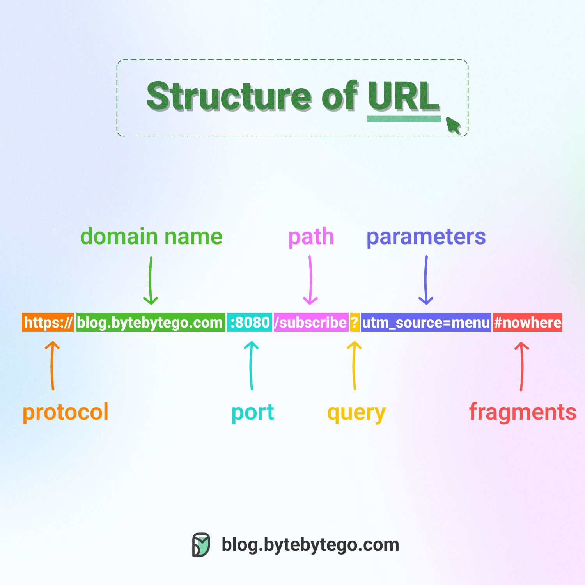

Uniform Resource Locator (URL)
Category: Navigation & Resources
Definition
A URL is a global address used to locate resources on the World Wide Web. It points to a specific file, such as an HTML document, an image, or a video, hosted on a web server.
Anatomy of a URL
A URL is made of several parts working together:
- Protocol: (e.g.,
http://orhttps://) This tells the browser how to transfer the data. - Subdomain: (e.g.,
www.) This is an optional part that can specify a particular section of a website. - Domain Name: (e.g.,
www.google.com) This identifies the web server (resolved via DNS). - Port: (e.g.,
:80or:443) This specifies the port number through which the server listens for requests. - Path: (e.g.,
/terms/url.html) This specifies the exact folder and file on that server. - Query Parameters: (e.g.,
?search=term) These are optional and provide additional information to the server, often used in dynamic web applications. - Fragment: (e.g.,
#section1) This is used to jump to a specific part of the webpage.
Visual Breakdown

Importance in Web Applications
URLs can also carry "parameters" (e.g., ?search=laptop). These allow a Dynamic Web Application to know exactly what content to generate "on the fly" for the user.